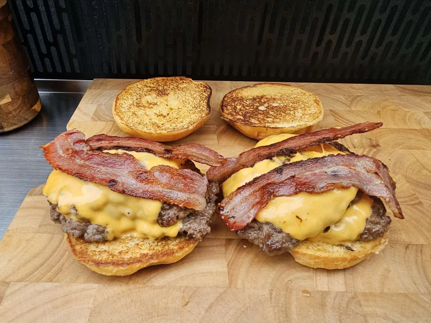

Harry's Bacon Beef Burgers

Bacon beefburgers
Probably tasier than your favourite local burger joint, definetely cheaper, definetely healthier
Shopping List
- Mince Beef (Any % Fat): 500g
- Bacon: 4 Rashers
- Bricohe Buns: 2
- Olive Oil: 1tsp
- Cheese Slices: 4
- Lettuce: 1
The Recipe
- Heat a griddle pan to medium high, add half the olive oil and bring to temp
- Portion the mince into x4 125g balls, add some seasoning if you wish
- Place 2 of the balls in the griddle pan and squish down hard with a meat mallet, making the mince as thing as possible, cook for 3 minutes.
- Flip and cook for a further 3 minutes, do not squish down this side!
- Take off the griddle and leave to rest, repeat steps 2 to 4 with the two remaining mince balls
- Cut your buns in half, lather them generously with butter and place under a 180c grill for at least 4 minutes, or until golden brown
- Place bacon in to an airfryer, oven or pan fry until cooked. Place to one side
- Cut your lettuce into shreds, place a handfull of shredded lettuce onto the bottom of each burger
- Create the burger by layering a burger patty with a cheese slice, repeat and then finally top with bacon
- Enjoy!
Tips!
A lot of cooking is in the way something is cooked, below are some tips I've found out through my time cooking this dish!
- You can add whatever toppings you like to this, I personally favour mayo, diced pickles and grilled onions, but you can add whatever floats your boat!
- Not squishing the burger once it's flipped is integral, you want the juices to suck back up for a nice juicy bite.
- If you don't want to smash your burgers, this recipe still works. Just adjust cooking times as necessary
Home